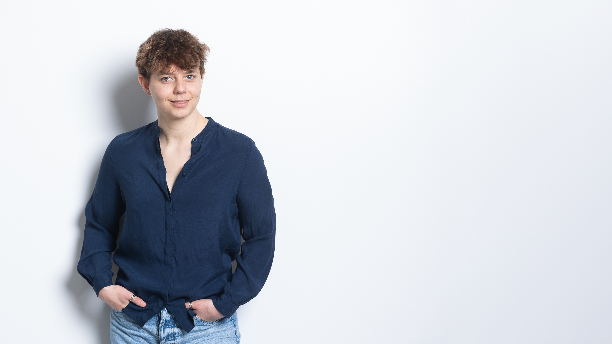

Data scientist pour la recherche.
Je m'appelle Ophelia et j’aide des équipes académiques à transformer des jeux de données complexes en résultats. rigoureux, reproductibles et clairs.
- Modèles mixtes (GLMM)
- Plans longitudinaux
- Visualisation
- R | Python

Travaux & publications
- Cheval, B., Ceravolo, L., Zimmermann, O., Igloi, K., Sander, D., van Ruitenbeek, P., Boisgontier M. P. (2025). Neural correlates of approach–avoidance tendencies toward physical activity and sedentary stimuli: An MRI study. Imaging Neuroscience DOI
- Voegeli, J. V., Bjelogrlic, M., Gaudet-Blavignac, C., Dubos, R., Zimmermann, M. O., Bensahla Talet, A., Zheng, Y., Ehrsam, J., & Lovis, C. (2024). SIMpat: A Synthetic Benchmark for Similarity Metrics on Patient Representations. Studies in health technology and informatics, 316, 1647–1651. DOI
- Guedj, C., Tyrand, R., Badier, E., Planchamp, L., Stringer, M., Zimmermann, M.O., Férat, V., Ha-Vinh Leuchter, R. and Grouiller, F. (2023). Self-regulation of attention in children in a virtual classroom environment: a feasibility study Bioengineering , 10(12), 1352. DOI
Liste complète : voir ORCID
Discutons de votre projet
Un court brief suffit pour commencer (domaine, données, échéance).